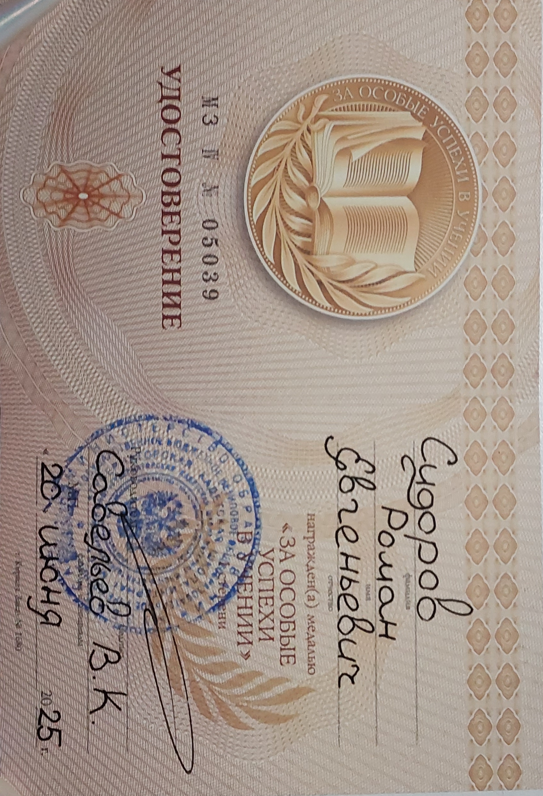
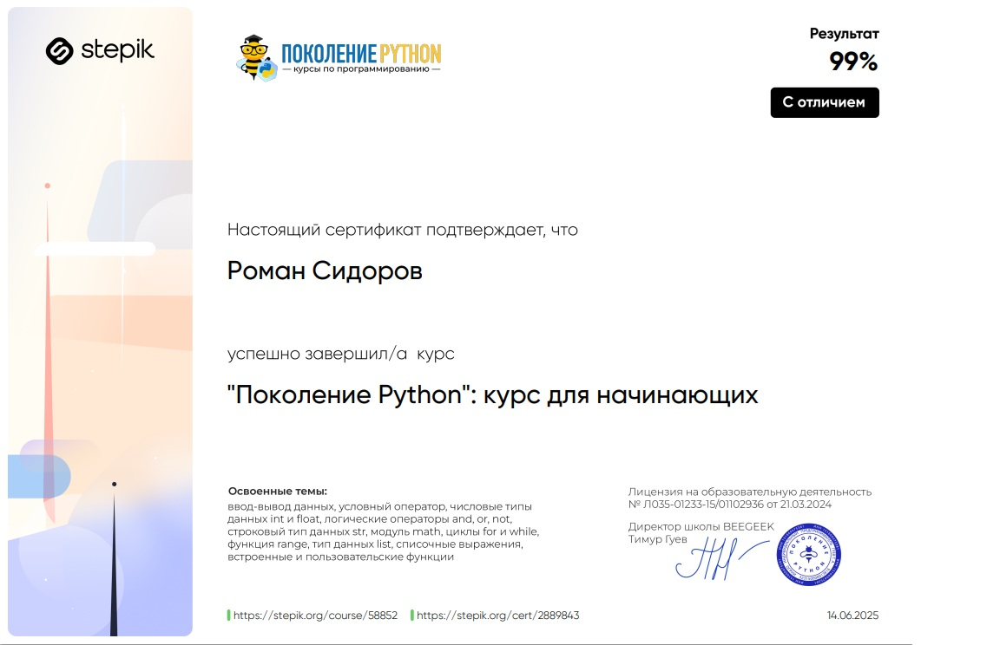

Обо мне
Меня зовут Сидоров Роман Евгеньевич, я студент первого курса Томского политеха (группа 8К51) и только начинаю свой путь в разработке.
Еще со школы я научился ставить себе сложные задачи и добиваться своего. Например, я закончил кадетский корпус с золотой медалью и сдал нормативы на золотой знак ГТО. Помимо этого, я занимаюсь музыкой – закончил музыкальную школу по классу саксофона и сам учусь играть на других инструментах. Я считаю всё это позволяет развивать креативность, настойчивость и умение видеть результат долгой работы.
Но больше всего меня тянет к IT. Программированием я увлекся еще в 7 классе, когда делал моды для игры Minecraft. Потом это переросло в больший интерес, я начал изучать основы различных языков, таких как C++ и C#. К 11 классу я понял, что хочу заниматься разработкой программ.
Сейчас моя цель – получить серьезные знания и опыт, поэтому и участвую в программе ТОП-ИТ.
Мотивационное письмо
Почему на программу ТОП-ИТ должны взять именно меня?
Моя главная сильная сторона — это умение ставить перед собой цель и работать, пока не увижу результат. Золотая медаль в школе как раз доказательство того, что я умею доводить дело до конца. Если я за что-то берусь, я в это погружаюсь полностью.
Два года в кадетском корпусе дали мне хороший опыт работы в команде. Я понимаю, что значит быть частью одного дела, слушать других, предлагать свои идеи и вместе приходить к лучшему решению. Это было тяжело, но именно там я получил опыт общения с различными людьми для выполнения какой-либо задачи. В IT почти все проекты — это командная работа, и я уже понимаю, как это устроено.
Сейчас я не могу сказать, что хочу быть только backend-разработчиком или только специалистом по данным, мне интересно попробовать всё. Я хочу на практике понять, что мне ближе и в чём я сильнее. Для этого мне нужно поработать с разными технологиями и задачами.
Я вижу себя специалистом, который может уверенно чувствовать себя в разных областях и работать в команде над большими проектами.
Поэтому я и хочу попасть на ТОП-ИТ. Мне кажется, эта программа — идеальный шанс получить реальный опыт и познакомиться с разными направлениями в IT.
Портфолио
- Удостоверение "За особые успехи в учении" 1 степени
 - Сертификат о завершении курса по Python
 - В процессе подготовки к ЕГЭ разрабатывал консольное приложение тренажер на Python для подготовки к ЕГЭ по Русскому языку
GITHUB
Там же код сайта на html и css, которые я попытался выучить за несколько дней для этого отбора